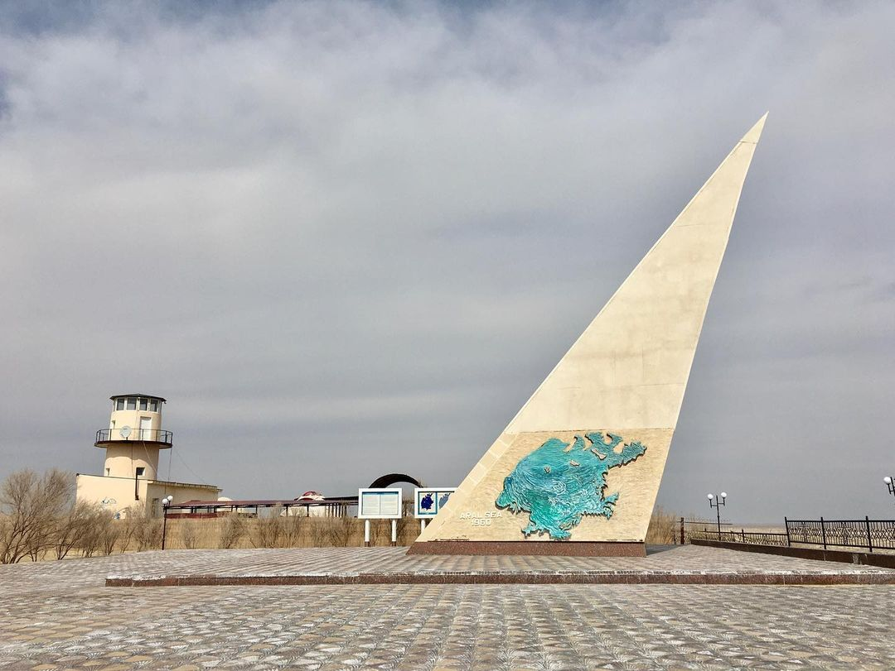

Мы занимаемся волонтерством, бесплатно помогаем жителям нашей деревни. Волонтерство началось с праздников в школе. Мы помогали в оформлении и проведении мероприятий. Устраивали утренники для детей, устраивали вечеринки для взрослых.
Теперь мы стали помогать не только в школе, но и во всей деревне. Еще мы просто навещаем пенсионеров и общаемся с ними. Им не хватает внимания, а мы готовы его оказать.
Волонтерство — это не только праздники: сейчас мы занимаемся экологией и благоустройством Муйнака. Проводим субботники, убираем мусор, красим площадки и постройки. Например, в этом году мы красили лавочки, бордюры возле дома культуры и забор. Жителям и гостям должно быть приятно находиться в деревне, это наша задача.
Мы развлекали детей из начальных классов на празднике 1-го июня – играли в подвижные игры, проводили флешмоб. Еще мы сажали деревья вдоль городских дорог.
Раз в год мы выезжаем на слет волонтеров. Это все время разные места, в основном — такие же деревни, как наша. Это дополнительное общение, все делятся опытом, заводят друзей. Мне нравятся эти поездки.
«Я считаю, что идеальных волонтеров, как и идеальных людей, не существует. Что белое для одних, может быть черным для других. Однако, по моему мнению,есть ряд качеств, которыми должен обладать волонтер для хорошего выполнения своих функций»
Бердибай
Полат: Почему вам нравится заниматься волонтерством?
Бердибай: Волонтерство дает мне возможность реализовать себя, знакомиться с новыми людьми, позволяет быть в центре событий, а также, безусловно, помогать. Помогать людям, животным, окружающей среде. Также я считаю, что своими поступками показываю пример другим людям, менее активным. И даже если один человек последует моему примеру - значит, я сделала мир чуточку лучше, а это дорогого стоит.
Полат: Вы хотите заниматься волонтерством на протяжении всей жизни?
Бердибай: В наше время волонтерство получило широкую популярность, также эту деятельность поддерживает государство. Раньше было приятно думать, что волонтеры - это преимущественно молодые люди, однако сейчас есть такая категория, как "серебряные волонтеры",поэтому нет никаких проблем, чтобы заниматься добровольчеством всю жизнь.
Полат: Нравятся ли слеты волонтеров и почему?
Бердибай: Слет волонтеров, неважно какого уровня - районного или окружного - это встреча ребят с одинаковыми взглядами, жизненными установками и ориентациями. Это встреча единомышленников, обмен опытом, это возможность придумать новую идею и почерпнуть вдохновения на ее реализацию. Это возможность поработать на разных площадках под руковдством более опытных специалистов, научиться новому, познакомиться с полезными людьми. По этому, безусловно, это очень полезные мероприятия, которые я посещаю с удовольствием.
К нам в деревню иногда приезжают чиновники, для них устраивают презентацию наших проектов в Доме культуры. Некоторые из проектов они берут в реализацию. Например, постройка игровой площадки в деревнях, починка дорог, закупка инвентаря для купания и строительство беседки для пикников. К нам прислушиваются, это здорово.